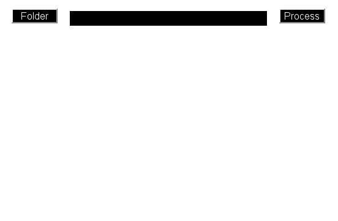

Contents
- Parse the optional inputs.
- Create the figure.
- Store the inputs.
- Nested function to select a folder
- Get the folder to process.
- Update the folder text box.
- Nested function to process the Imaris files
- Get all the Imaris files in the folder.
- Connect to Imaris.
- Setup the progress bar.
- Segment the contacts in all the files.
- Record the start time for processing.
- Load the data file into the connected Imaris instance.
- Get the data set properties.
- Identify the channels. (1-based indices)
- Use the first contour channel. If there is no contour channel, continue.
- Get the movie images.
- Crop the images to the cell path.
- Expand the contour slightly.
- Create a filtering kernel to smooth the data.
- Detect regional minima and contour the holes.
- Transfer the contacts to Imaris as spots.
- Save the processed file.
- Update the status bar and estimate the time required to finish.
- Reset the status bar.
- Close the image display figure if open, the close the gui figure.
function segmentationautomation(varargin)
% SEGMENTATIONAUTOMATION Automated identification of contact % zones % % Syntax % ------ % CONTACTAUTOMATION prompts the user to select a folder with Imaris % data to process. A new Imaris instance is opened to load and process % the data. % % CONTACTAUTOMATION(strFolder) processes Imaris files in the folder % indicated by the fully qualified path string strFolder. If the folder % indicated by strFolder does not exist, the function errors and exits. % % CONTACTAUTOMATION(strFolder, imarisID) connects to the Imaris % instance specified by imarisID. The imarisID input can be zero or % positive-valued integer. If no running instance of Imaris has an ID % equal to imarisID, a new instance will be created with the specified % ID. % % ©2014, P. Beemiller. Licensed under a Creative Commmons Attribution % license. See: http://creativecommons.org/licenses/by/3.0/
Parse the optional inputs.
segmentationautomationParser = inputParser;
segmentationautomationParser.addOptional('xFolder', '', @(arg)exist('arg', 'dir'))
segmentationautomationParser.addOptional('xImarisID', '', ...
@(arg)...
(isnumeric(arg) && rem(arg, 1) == 0) || ...
(~isnan(str2double(arg)) && rem(str2double(arg), 1) == 0))
parse(segmentationautomationParser, varargin{:})
xFolder = segmentationautomationParser.Results.xFolder;
xImarisID = segmentationautomationParser.Results.xImarisID;
Create the figure.
desktopPos = get(0, 'MonitorPositions'); guiWidth = 552; guiHeight = 361; figPos = [... (desktopPos(1, 3) - guiWidth)/2, ... (desktopPos(1, 4) - guiHeight)/2, ... guiWidth, ... guiHeight]; guiSegmentation = figure(... 'Color', 'k', ... 'CloseRequestFcn', {@closecontactautomationfcn}, ... 'MenuBar', 'None', ... 'Name', 'Contact segmentation', ... 'NumberTitle', 'Off', ... 'Position', figPos, ... 'Resize', 'Off', ... 'Tag', 'guiSegmentation'); % Create the open and process buttons. uicontrol(... 'Background', 'k', ... 'Callback', {@pushfolderopen, guiSegmentation}, ... 'FontSize', 12, ... 'Foreground', 'w', ... 'Position', [20 324 75 24], ... 'String', 'Folder', ... 'Style', 'pushbutton', ... 'Tag', 'pushOpen', ... 'TooltipString', 'Open a folder with Imaris data'); uicontrol(... 'Background', 'k', ... 'Callback', {@pushfolderprocess, guiSegmentation}, ... 'FontSize', 12, ... 'Foreground', 'w', ... 'Position', [457 324 75 24], ... 'String', 'Process', ... 'Style', 'pushbutton', ... 'Tag', 'pushProcess', ... 'TooltipString', 'Process all Imaris files in the folder'); % Create a uicontrol to display the selected folder. textFolder = uicontrol(... 'Background', 'k', ... 'FontSize', 10, ... 'Foreground', 'w', ... 'HorizontalAlignment', 'Left', ... 'Position', [115 320 322 24], ... 'String', '', ... 'Style', 'text', ... 'Tag', 'textFolder'); % Create the display axes. axesContours = axes(... 'Units', 'Pixels', ... 'Color', 'k', ... 'Parent', guiSegmentation, ... 'Position', [20 40 512 256], ... 'XColor', 'k', ... 'YColor', 'k'); % Setup the status bar. hStatus = statusbar(guiSegmentation, xFolder); hStatus.CornerGrip.setVisible(false) hStatus.ProgressBar.setForeground(java.awt.Color.black) hStatus.ProgressBar.setString('') hStatus.ProgressBar.setStringPainted(true)
Store the inputs.
setappdata(guiSegmentation, 'xFolder', xFolder) setappdata(guiSegmentation, 'xImarisID', xImarisID)
Nested function to select a folder
function pushfolderopen(varargin)
% PUSHOPEN Select a folder with data to process % %
Get the folder to process.
xFolder = getappdata(guiSegmentation, 'xFolder'); xFolder = uigetdir(xFolder); setappdata(guiSegmentation, 'xFolder', xFolder)
Update the folder text box.
slashIdxs = strfind(xFolder, filesep);
folderEnd = xFolder(slashIdxs(end - 1) + 1:end);
set(textFolder, 'String', ['...\' folderEnd])
end % pushfolderopen
Nested function to process the Imaris files
function pushfolderprocess(varargin)
% PUSHFOLDERPROCESS Process the Imaris files in the selected folder. % %
Get all the Imaris files in the folder.
xFolder = getappdata(guiSegmentation, 'xFolder'); xFiles = dir(fullfile(xFolder, '*.ims')); if isequal(xFolder, 0) || isempty(xFiles) return end % if fStartTime = zeros(length(xFiles), 1);
Connect to Imaris.
xImarisID = getappdata(guiSegmentation, 'xImarisID'); if ~isempty(xImarisID) xImarisApp = xtconnectimaris(xImarisID); else [xImarisApp, xImarisID] = xtconnectimaris; setappdata(guiSegmentation, 'xImarisID', xImarisID) end % if
Setup the progress bar.
hStatus.ProgressBar.setVisible(true)
hStatus.ProgressBar.setMaximum(length(xFiles))
completionEstimate = 'N/A';
Segment the contacts in all the files.
for f = 1:length(xFiles)
Record the start time for processing.
fStartTime(f) = datenum(datetime('now'));
Load the data file into the connected Imaris instance.
xImarisApp.FileOpen(fullfile(xFolder, xFiles(f).name), 'reader="Imaris5"');
Get the data set properties.
[~, fFileName, ~] = fileparts(char(xImarisApp.GetCurrentFileName));
hStatus.setText(['Processing: ' fFileName ' | Estimated finish: ' completionEstimate])
% Get the data set dimensions.
xDataSet = xImarisApp.GetDataSet;
xSize = xDataSet.GetSizeX;
ySize = xDataSet.GetSizeY;
yMax = xDataSet.GetExtendMaxY;
cSize = xDataSet.GetSizeC;
tSize = xDataSet.GetSizeT;
Identify the channels. (1-based indices)
channelNames = cell(cSize, 1);
for c = 1:cSize
channelNames{c} = char(xDataSet.GetChannelName(c - 1));
end % for c
qdotChannel = find(~cellfun(@isempty, ...
regexp(channelNames, '^(Q(D|d)ot)', 'Match', 'Once')));
contourChannel = find(~cellfun(@isempty, ...
regexp(channelNames, '(C|c)ontours', 'Match', 'Once')));
Use the first contour channel. If there is no contour channel, continue.
if length(contourChannel) > 1; contourChannel = contourChannel(1); elseif isempty(contourChannel) continue end % if
Get the movie images.
qdotImage = zeros(1, ySize*xSize, tSize);
contourImage = false(1, ySize*xSize, tSize);
for t = 1:tSize;
% Get the qdot image.
qdotSlice = double(...
xDataSet.GetDataVolumeAs1DArrayShorts(qdotChannel - 1, t - 1));
qdotImage(:, :, t) = qdotSlice;
% Get the contour slice.
contourSlice = logical(...
xDataSet.GetDataVolumeAs1DArrayShorts(contourChannel - 1, t - 1));
contourImage(:, :, t) = contourSlice;
end % for t
qdotImage = rot90(reshape(qdotImage, [xSize, ySize, tSize]), 1);
contourImage = rot90(reshape(contourImage, [xSize, ySize, tSize]), 1);
Crop the images to the cell path.
contourProjection = sum(uint8(contourImage), 3) > 0;
projectionRgnProps = regionprops(contourProjection, 'BoundingBox');
rectPos = [projectionRgnProps.BoundingBox];
cropXs(1) = max([1, floor(rectPos(1)) - 10]);
cropXs(2) = cropXs(1) + floor(rectPos(3)) + 19;
cropXs(2) = min([xSize, cropXs(2) + (rem(diff(cropXs), 2) - 1)]);
cropYs(1) = max([1, floor(rectPos(2)) - 10]);
cropYs(2) = cropYs(1) + floor(rectPos(4)) + 19;
cropYs(2) = min([ySize, cropYs(2) + (rem(diff(cropYs), 2) - 1)]);
qdotCropped = qdotImage(cropYs(1):cropYs(2), cropXs(1):cropXs(2), :);
% Normalize the images to the intensity range in the cell region.
qdotRange = [min(qdotCropped(:)) max(qdotCropped(:))];
qdotNormalized = (qdotImage - qdotRange(1))/(qdotRange(2) - qdotRange(1));
Expand the contour slightly.
contourExpanded = false(size(contourImage));
for t = 1:tSize
contourDistance = 0.1*bwdist(contourImage(:, :, t));
contourExpanded(:, :, t) = contourDistance < 0.25;
end % for t
Create a filtering kernel to smooth the data.
cKernel = fspecial('gaussian', [7 7], 1);
Detect regional minima and contour the holes.
Contacts segmentation results are stored as the output of regionprops.
cellContacts = cell(1, tSize);
for t = 1:tSize;
% If the cell is not bound in the frame, continue.
tContour = contourExpanded(:, :, t);
if ~any(tContour(:))
continue
end % if
% Filter and detect maxima.
tQDot = qdotNormalized(:, :, t);
tRgnMin = imregionalmin(imfilter(tQDot, cKernel, 'Symmetric')) & ...
tContour & ...
tQDot < median(tQDot(:));
tContacts = regionprops(tRgnMin, 'Area', 'Centroid', 'PixelIdxList');
% Dilate and contour the seed points.
for s = 1:length(tContacts)
% Create the input mask.
sPhi = false(size(tQDot));
sPhi(floor(tContacts(s).Centroid(2)), floor(tContacts(s).Centroid(1))) = 1;
sPhi = imdilate(sPhi, strel('disk', 1));
% Contour.
sPhi = activecontour(qdotNormalized(:, :, t), sPhi, 5, 'Chan-Vese', ...
'ContractionBias', 0, ...
'SmoothFactor', 0);
% Get the region properties.
sContact = regionprops(sPhi, 'Area', 'Centroid', 'PixelIdxList');
if ~isempty(sContact)
if length(sContact) == 1 && sContact.Area > 5
tContacts(s) = deal(sContact);
else % The region has fragmented into sub-regions. Keep the largest region.
idxPrimaryRgn = find([sContact.Area] == max([sContact.Area]), 1);
sContact = sContact(idxPrimaryRgn);
if sContact.Area > 5
tContacts(s) = deal(sContact);
end % if
end % if
end % if
end % for s
% Remove the isolated minima.
tContacts = tContacts([tContacts.Area] > 5);
% Merge overlapping regions. Use 50% overlap as a merge critera.
for s = 1:length(tContacts)
% Get the segmentation data.
sProps = tContacts(s);
% If we've merged this region already, move on.
if isempty(sProps.Centroid)
continue
end % if
% Create the list of regions to test. Do not search the
% region itself and do not search regions that have
% been merged with a lower index region.
pIdxs = 1:length(tContacts);
pIdxs(s) = nan;
pIdxs(arrayfun(@(s)isempty(s.Centroid), tContacts)) = nan;
pIdxs(isnan(pIdxs)) = [];
% Check each target for overlap.
for p = pIdxs
% Get the overlapping pixels.
pProps = tContacts(p);
idxOverlap = ismember(sProps.PixelIdxList, pProps.PixelIdxList);
if ~any(idxOverlap(:))
continue
else
% Quantify the overlap.
oMask = false(size(sPhi));
oMask(sProps.PixelIdxList(idxOverlap)) = 1;
oProps = regionprops(oMask, 'Area');
oArea = sum([oProps.Area]);
% Determine whether to merge.
if oArea/sProps.Area >= 0.5 || oArea/pProps.Area >= 0.5
% Create the merged region.
cMask = false(size(sPhi));
cMask([sProps.PixelIdxList; pProps.PixelIdxList]) = 1;
sProps = regionprops(cMask, 'Area', 'Centroid', 'PixelIdxList');
% Delete the centroid data for the region
% we merged in, so we skip over it when we
% reach it in the loop.
if s < p
% The p-index region is now merged into the
% s-index region. Remove the centroid value for p
% and update s.
tContacts(p).Centroid = [];
tContacts(s) = sProps;
else
% The s-index region is now merged into
% the p-index region. Remove the
% centroid value for s and update p.
% Break out of the p loop, as s is now
% invalid.
tContacts(p) = sProps;
tContacts(s).Centroid = [];
break
end % if
end % if
end %if
end % for p
end % for s
% Remove the regions that are now merged into other regions.
mergedRgnIdxs = arrayfun(@(s)isempty(s.Centroid), tContacts);
tContacts(mergedRgnIdxs) = [];
% Assign Spot IDs to match Imaris and add to contact cell
% array.
rgnCount = sum(cellfun(@length, cellContacts));
iSpotIDs = num2cell(rgnCount:rgnCount + length(tContacts) - 1);
[tContacts.ID] = deal(iSpotIDs{:});
cellContacts{t} = tContacts;
% Create the all-contacts mask.
tMask = false(size(tQDot));
tMask(vertcat(tContacts.PixelIdxList)) = true;
% Display the slice.
cla(axesContours)
imshow(ind2rgb(gray2ind(tQDot, 256), colorramp('o', 256, 'k')), ...
'Parent', axesContours)
% imshow(tQDot, [], 'Parent', axesContours)
set(axesContours, 'NextPlot', 'Add')
% Draw the cell border.
contour(axesContours, contourExpanded(:, :, t), [1 1], 'Color', [0 0.5 1])
% Draw the new regions on the preview image.
contour(axesContours, tMask > 0, [1 1], 'g')
title(axesContours, ['Time point ' num2str(t) ' of ' num2str(tSize)], ...
'Color', 'w')
drawnow
end % for t
% Save the contact data.
save(fullfile(xFolder, ['Contacts ' fFileName, '.mat']), 'cellContacts')
Transfer the contacts to Imaris as spots.
Allocate arrays for the spots.
countSpots = sum(cellfun(@length, cellContacts));
posSpots = zeros(countSpots, 3, 'single');
timeSpots = zeros(countSpots, 1, 'int32');
radiiSpots = zeros(countSpots, 1, 'single');
rStart = 1;
for t = 1:length(cellContacts)
tContacts = cellContacts{t};
if isempty(tContacts)
continue
end % if
tSpotCount = length(tContacts);
rEnd = rStart + tSpotCount - 1;
posXYImaris = 0.1*(vertcat(tContacts.Centroid));
posXYImaris(:, 2) = yMax - posXYImaris(:, 2);
posSpots(rStart:rEnd, 1:2) = posXYImaris;
posSpots(rStart:rEnd, 3) = 0.5;
timeSpots(rStart:rEnd) = t - 1;
radiiSpots(rStart:rEnd) = 0.1*sqrt([tContacts.Area]/pi);
rStart = rStart + tSpotCount;
end % for t
% Create and place the spots object.
xSpots = xImarisApp.GetFactory.CreateSpots;
xSpots.Set(posSpots, timeSpots, radiiSpots);
xSpots.SetName('Contacts')
xSpots.SetColorRGBA(rgbtripleto24bit([0 0.5 1]))
xImarisApp.GetSurpassScene.AddChild(xSpots, -1)
Save the processed file.
xImarisApp.FileSave(fullfile(xFolder, xFiles(f).name), 'writer="Imaris5"')
Update the status bar and estimate the time required to finish.
timeElapsed = datenum(datetime('now')) - fStartTime(1); completionEstimate = datestr(datenum(datetime('now')) + ... timeElapsed/f*(length(xFiles) - f), 'HH:MM PM'); hStatus.setText(['Processing: ' fFileName ' | Estimated finish: ' completionEstimate]) hStatus.ProgressBar.setValue(f)
end % for f
Reset the status bar.
hStatus.setText('Finished processing folder')
hStatus.ProgressBar.setValue(0)
hStatus.ProgressBar.setVisible(0)
end % pushfolderprocess
end % contactsegmentationautomation function closecontactautomationfcn(guiContactSegmentation, ~)
% CLOSECONTACTAUTOMATIONFCN Close the GUI and figure window % %
Close the image display figure if open, the close the gui figure.
figContours = getappdata(guiContactSegmentation, 'figContours'); if ishandle(figContours) delete(figContours) end % if delete(guiContactSegmentation)
end % closecontactautomationfcn